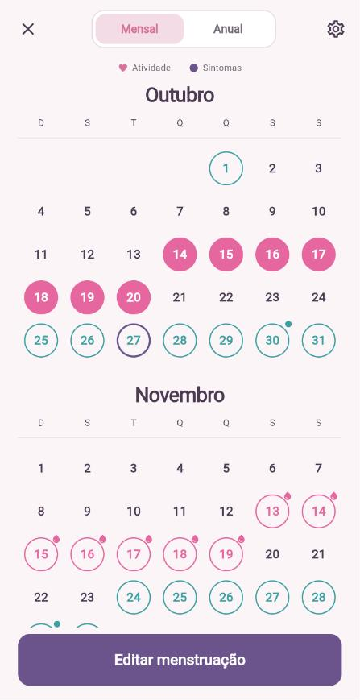
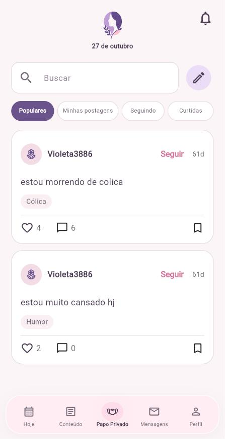
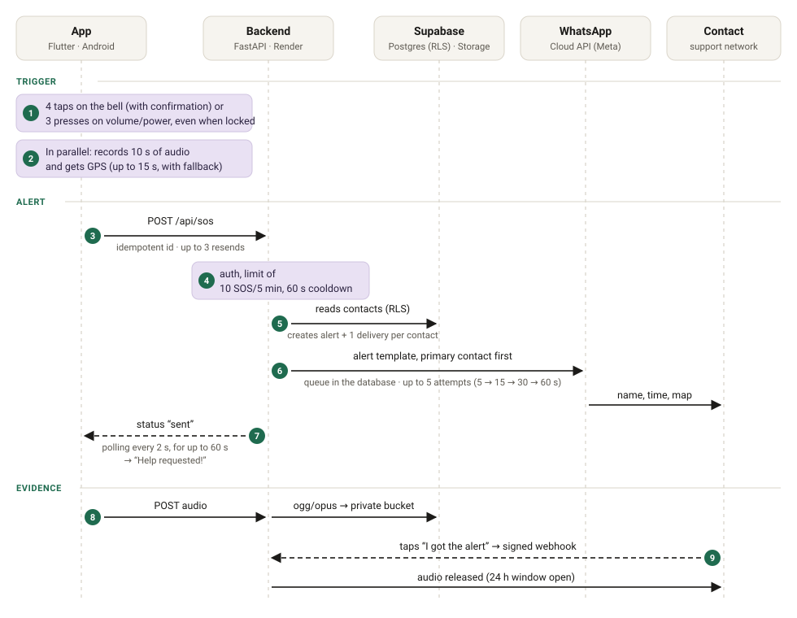

SafeVoice
On the outside, a period tracker. On the inside, a silent panic button that alerts the support network via WhatsApp, with location and audio.
- My role
- Full-stack developer
- When
- Mar to Sep 2026
- Team
- 4 people · 58 of 87 commits are mine
- Result
- 2nd place in Market Viability, FETIN





The app’s interface is in Portuguese.
Why it exists
In domestic violence situations, opening a messaging app and typing a request for help may not be safe. Common SOS buttons make noise or require actions the abuser can see.
In SafeVoice, help is requested with 4 taps on the bell on the home screen, with a confirmation, or with 3 presses on the volume or power buttons, even with the screen locked. The app records 10 seconds of audio, gets the location and alerts the trusted contacts via WhatsApp.

What I built
- The FastAPI API, deployed on Render: it creates the alert, checks the Supabase login and limits requests to 10 every 5 minutes.
- A delivery queue stored in the database that tries up to 5 times per contact and survives server restarts.
- The integration with the official WhatsApp API, including the webhook that confirms when a message arrives. I also tested Twilio and a WhatsApp Web bot as alternatives.
- The Supabase database with Row Level Security, and private storage for the audio.
- The physical button triggers in Flutter, with recording and GPS at the same time.
- Tests with pytest and flutter test running on GitHub Actions, and logs with no personal data.
What was hard
Android blocks recording when the app is closed
Since Android 10, the SOS from the buttons could not use the microphone or GPS in the background. The fix was to open the app on top of the lock screen through the accessibility service.
The same request arriving twice
The bell and the buttons run in separate processes, and the network can drop midway. Each request carries a unique identifier, so a resend returns the same alert instead of creating another one.
WhatsApp’s 24-hour rule
The audio can only be sent after the contact interacts with the conversation. The delivery waits, without using up attempts, until they tap “I got the alert”.
Team
Stefanie Saponara (design and UX/UI), Mikael da Silva Ribeiro (Flutter frontend), Eliseu Almeida Marinho de Oliveira (prototypes and architecture) and me. Advised by Prof. Jonas Lopes de Vilas Boas.